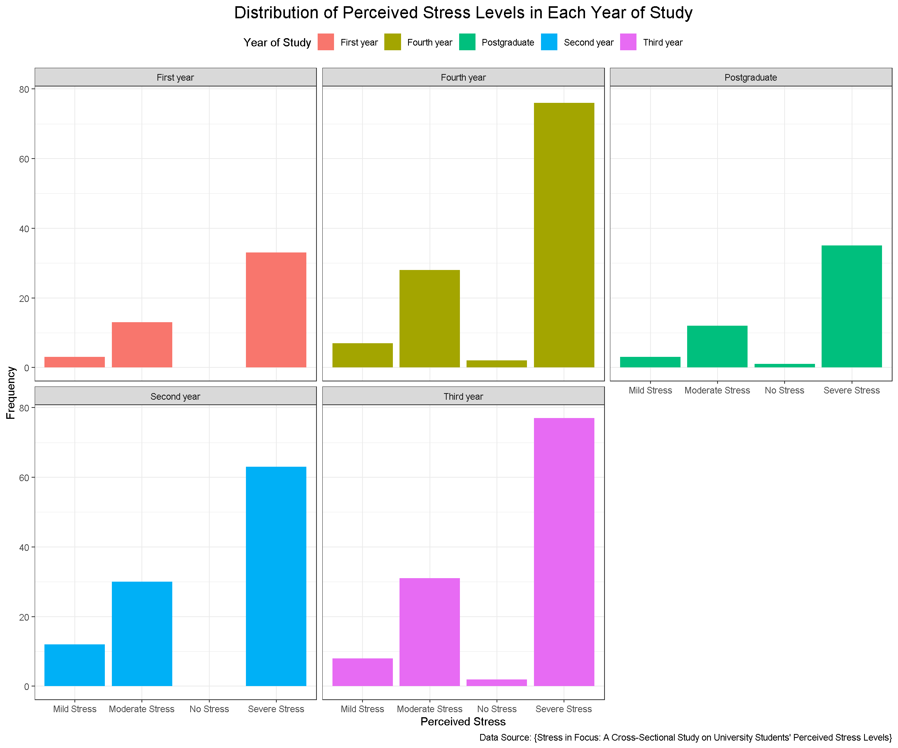
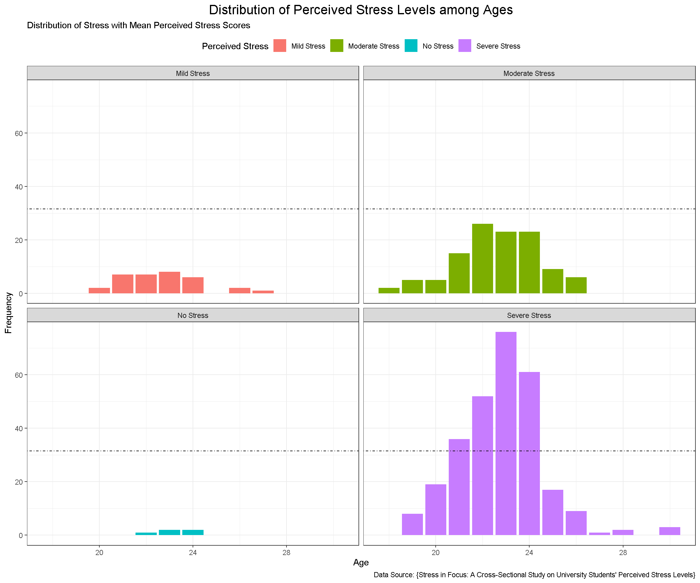
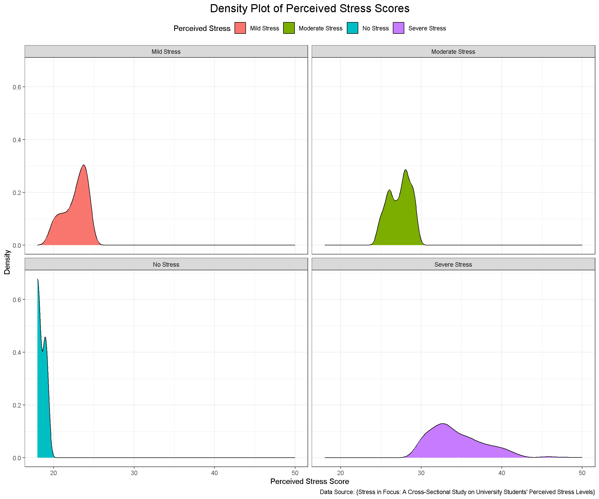
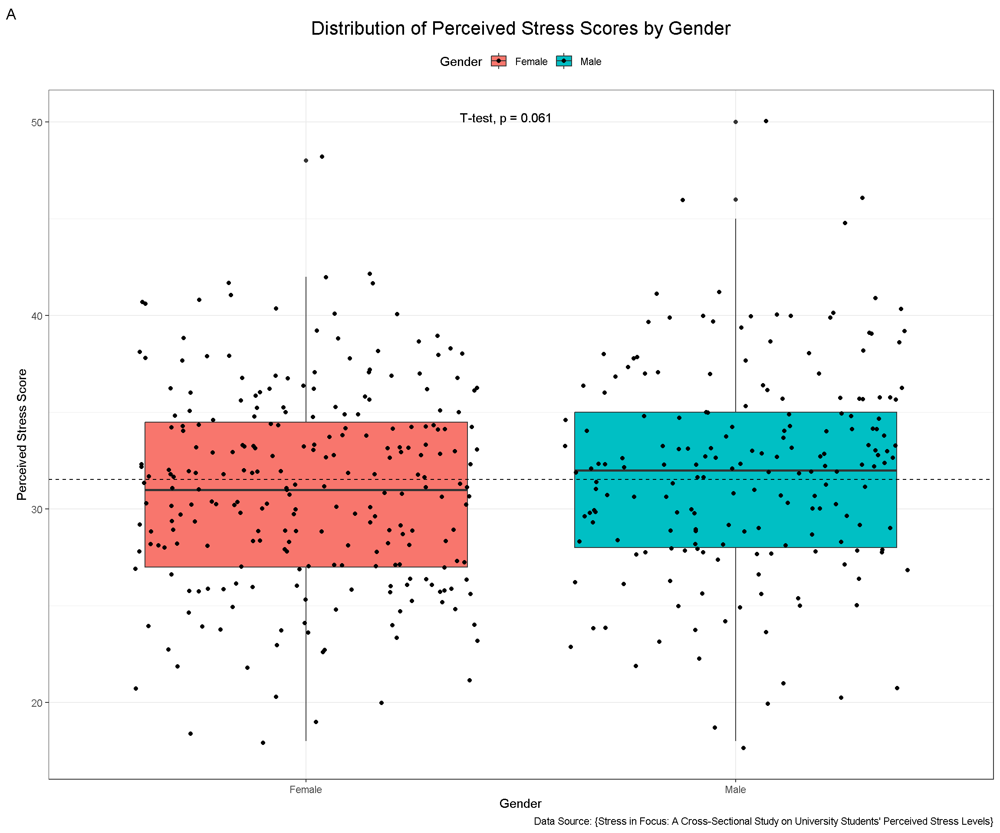
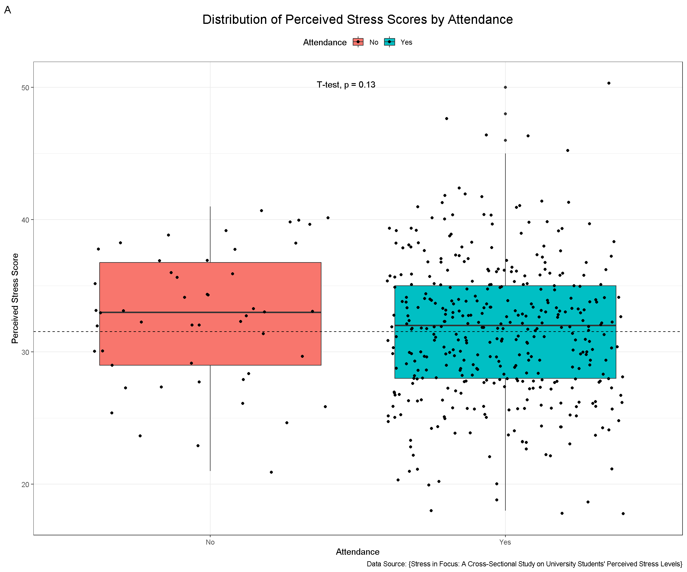
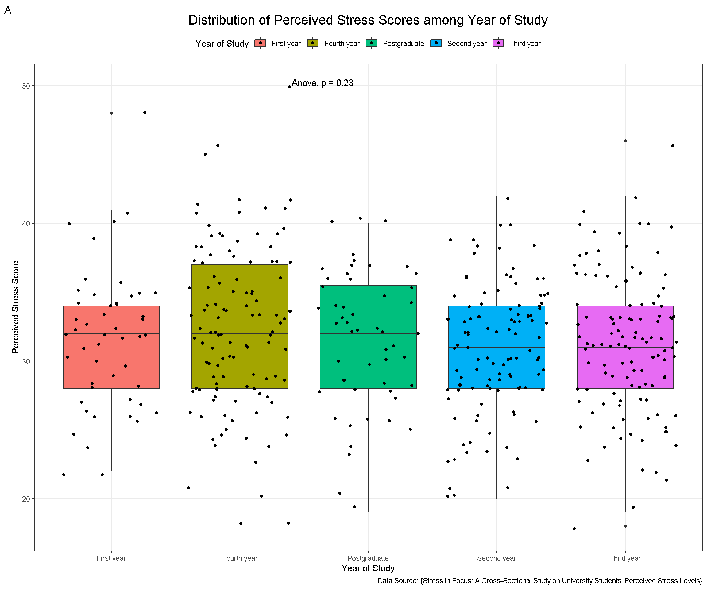
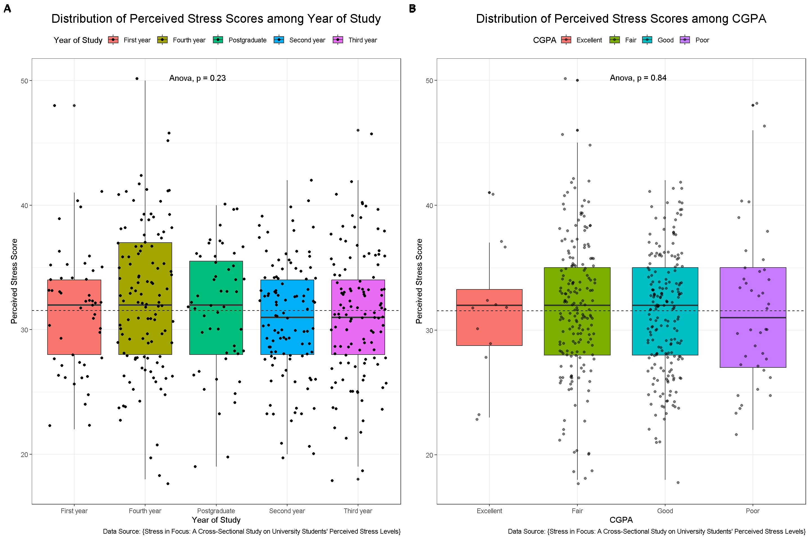
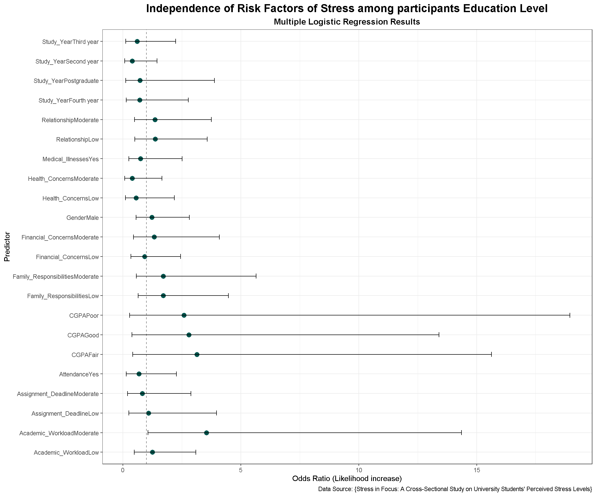
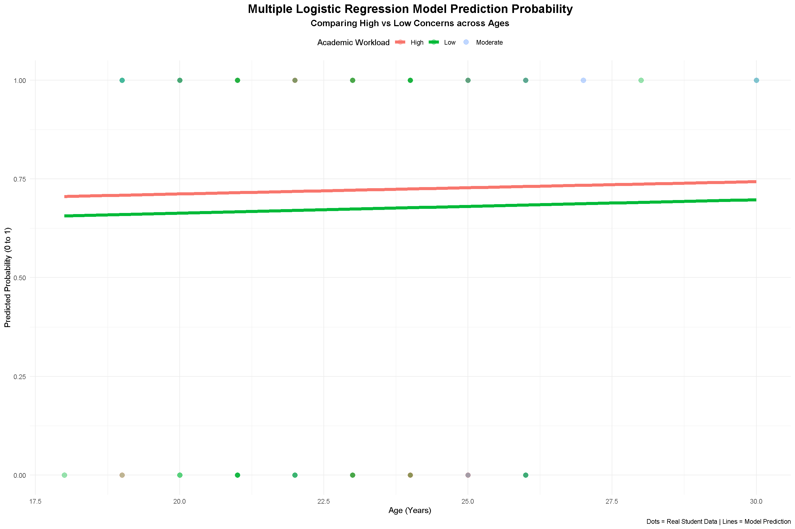
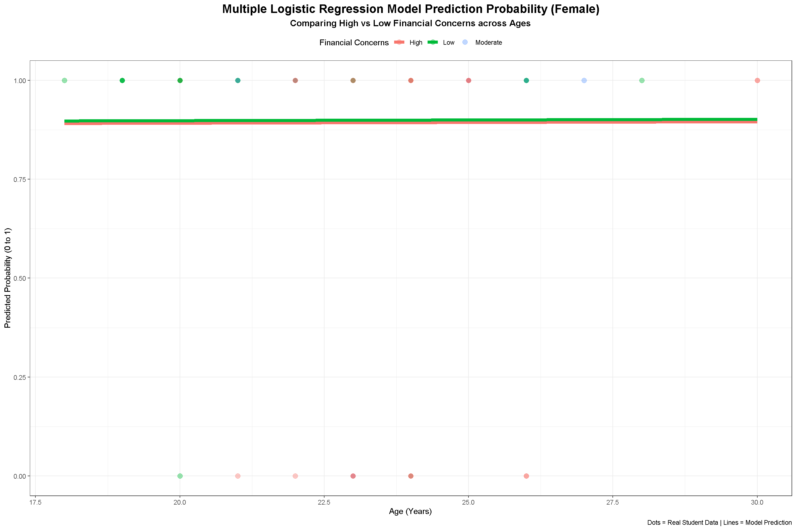

| Characteristic | N = 4361 |
|---|---|
| Age | 23 ± (2) |
| Gender | |
| Female | 247 (57%) |
| Male | 189 (43%) |
| Study_Year | |
| First year | 49 (11%) |
| Fourth year | 113 (26%) |
| Postgraduate | 51 (12%) |
| Second year | 105 (24%) |
| Third year | 118 (27%) |
| CGPA | |
| Excellent | 12 (2.8%) |
| Fair | 187 (43%) |
| Good | 197 (45%) |
| Poor | 40 (9.2%) |
| Satisfaction | |
| Neither satisfied nor dissatisfied | 167 (38%) |
| Somewhat dissatisfied | 51 (12%) |
| Somewhat satisfied | 140 (32%) |
| Very dissatisfied | 39 (8.9%) |
| Very satisfied | 39 (8.9%) |
| Attendance | 386 (89%) |
| 1 Mean ± (SD); n (%) | |
Stress in Focus: A Cross-Sectional Study on University Students’ Perceived Stress Levels
4. Results
4.1 Load Packages
Here, we use some packages for our work.
4.2 Load Data
To handle missing data in our dataset, we first load the dataset and check for missing values using appropriate functions. Then, apply necessary coding and modifications to ensure the dataset is clean and ready for analysis. (echo & eval = false)
4.3 Tables
Table 1. Demographic characteristics of the study participants (N=436)
Table 2. Stress Levels and Health Concerns among the study participants (N=436)
| Characteristic | N = 4361 |
|---|---|
| Perceived_Stress | |
| Mild Stress | 33 (7.6%) |
| Moderate Stress | 114 (26%) |
| No Stress | 5 (1.1%) |
| Severe Stress | 284 (65%) |
| Medical_Illnesses | |
| No | 380 (87%) |
| Yes | 56 (13%) |
| Medical_Symptoms | |
| No | 355 (81%) |
| Yes | 81 (19%) |
| Severity | |
| Mild symptoms | 36 (8.3%) |
| Moderate symptoms | 44 (10%) |
| No Symptoms | 355 (81%) |
| Severe symptoms | 1 (0.2%) |
| 1 n (%) | |
Table 3. Association between Stress and Study Variables among participants Education Level (N=436)
| Characteristic | Overall N = 4361 |
Mild Stress N = 331 |
Moderate Stress N = 1141 |
No Stress N = 51 |
Severe Stress N = 2841 |
p-value2 |
|---|---|---|---|---|---|---|
| Gender | 0.5 | |||||
| Female | 247 (57%) | 20 (61%) | 71 (62%) | 3 (60%) | 153 (54%) | |
| Male | 189 (43%) | 13 (39%) | 43 (38%) | 2 (40%) | 131 (46%) | |
| Study_Year | >0.9 | |||||
| First year | 49 (11%) | 3 (9.1%) | 13 (11%) | 0 (0%) | 33 (12%) | |
| Fourth year | 113 (26%) | 7 (21%) | 28 (25%) | 2 (40%) | 76 (27%) | |
| Postgraduate | 51 (12%) | 3 (9.1%) | 12 (11%) | 1 (20%) | 35 (12%) | |
| Second year | 105 (24%) | 12 (36%) | 30 (26%) | 0 (0%) | 63 (22%) | |
| Third year | 118 (27%) | 8 (24%) | 31 (27%) | 2 (40%) | 77 (27%) | |
| CGPA | 0.6 | |||||
| Excellent | 12 (2.8%) | 2 (6.1%) | 2 (1.8%) | 0 (0%) | 8 (2.8%) | |
| Fair | 187 (43%) | 11 (33%) | 44 (39%) | 4 (80%) | 128 (45%) | |
| Good | 197 (45%) | 16 (48%) | 57 (50%) | 1 (20%) | 123 (43%) | |
| Poor | 40 (9.2%) | 4 (12%) | 11 (9.6%) | 0 (0%) | 25 (8.8%) | |
| Attendance | 0.8 | |||||
| No | 50 (11%) | 3 (9.1%) | 11 (9.6%) | 0 (0%) | 36 (13%) | |
| Yes | 386 (89%) | 30 (91%) | 103 (90%) | 5 (100%) | 248 (87%) | |
| 1 n (%) | ||||||
| 2 Fisher’s exact test | ||||||
Table 4. Association between Stress and Study Variables among participants Education Level (N=436) (Binary options)
| Characteristic | Overall N = 4361 |
No N = 1521 |
Yes N = 2841 |
p-value2 |
|---|---|---|---|---|
| Gender | 0.11 | |||
| Female | 247 (57%) | 94 (62%) | 153 (54%) | |
| Male | 189 (43%) | 58 (38%) | 131 (46%) | |
| Study_Year | 0.8 | |||
| First year | 49 (11%) | 16 (11%) | 33 (12%) | |
| Fourth year | 113 (26%) | 37 (24%) | 76 (27%) | |
| Postgraduate | 51 (12%) | 16 (11%) | 35 (12%) | |
| Second year | 105 (24%) | 42 (28%) | 63 (22%) | |
| Third year | 118 (27%) | 41 (27%) | 77 (27%) | |
| CGPA | 0.6 | |||
| Excellent | 12 (2.8%) | 4 (2.6%) | 8 (2.8%) | |
| Fair | 187 (43%) | 59 (39%) | 128 (45%) | |
| Good | 197 (45%) | 74 (49%) | 123 (43%) | |
| Poor | 40 (9.2%) | 15 (9.9%) | 25 (8.8%) | |
| Attendance | 0.3 | |||
| No | 50 (11%) | 14 (9.2%) | 36 (13%) | |
| Yes | 386 (89%) | 138 (91%) | 248 (87%) | |
| 1 n (%) | ||||
| 2 Pearson’s Chi-squared test; Fisher’s exact test | ||||
Table 5. Association between Stress and Risk Factors among participants Education Level (N=436)
| Characteristic | Overall N = 4361 |
Mild Stress N = 331 |
Moderate Stress N = 1141 |
No Stress N = 51 |
Severe Stress N = 2841 |
p-value2 |
|---|---|---|---|---|---|---|
| Academic_Workload | 0.026 | |||||
| High | 120 (28%) | 14 (42%) | 24 (21%) | 1 (20%) | 81 (29%) | |
| Low | 220 (50%) | 15 (45%) | 70 (61%) | 4 (80%) | 131 (46%) | |
| Moderate | 96 (22%) | 4 (12%) | 20 (18%) | 0 (0%) | 72 (25%) | |
| Financial_Concerns | 0.023 | |||||
| High | 151 (35%) | 15 (45%) | 29 (25%) | 0 (0%) | 107 (38%) | |
| Low | 173 (40%) | 13 (39%) | 57 (50%) | 3 (60%) | 100 (35%) | |
| Moderate | 112 (26%) | 5 (15%) | 28 (25%) | 2 (40%) | 77 (27%) | |
| Relationship | 0.3 | |||||
| High | 101 (23%) | 9 (27%) | 25 (22%) | 2 (40%) | 65 (23%) | |
| Low | 209 (48%) | 17 (52%) | 63 (55%) | 1 (20%) | 128 (45%) | |
| Moderate | 126 (29%) | 7 (21%) | 26 (23%) | 2 (40%) | 91 (32%) | |
| Family_Responsibilities | 0.033 | |||||
| High | 127 (29%) | 14 (42%) | 24 (21%) | 0 (0%) | 89 (31%) | |
| Low | 211 (48%) | 13 (39%) | 66 (58%) | 5 (100%) | 127 (45%) | |
| Moderate | 98 (22%) | 6 (18%) | 24 (21%) | 0 (0%) | 68 (24%) | |
| Assignment_Deadline | 0.3 | |||||
| High | 43 (9.9%) | 4 (12%) | 9 (7.9%) | 0 (0%) | 30 (11%) | |
| Low | 284 (65%) | 20 (61%) | 84 (74%) | 5 (100%) | 175 (62%) | |
| Moderate | 109 (25%) | 9 (27%) | 21 (18%) | 0 (0%) | 79 (28%) | |
| Health_Concerns | 0.2 | |||||
| High | 51 (12%) | 2 (6.1%) | 9 (7.9%) | 1 (20%) | 39 (14%) | |
| Low | 301 (69%) | 24 (73%) | 89 (78%) | 3 (60%) | 185 (65%) | |
| Moderate | 84 (19%) | 7 (21%) | 16 (14%) | 1 (20%) | 60 (21%) | |
| Medical_Illnesses | 0.4 | |||||
| No | 380 (87%) | 28 (85%) | 104 (91%) | 4 (80%) | 244 (86%) | |
| Yes | 56 (13%) | 5 (15%) | 10 (8.8%) | 1 (20%) | 40 (14%) | |
| 1 n (%) | ||||||
| 2 Fisher’s exact test | ||||||
Table 6. Association between Stress and Risk Factors among participants Education Level (N=436) (Binary options)
| Characteristic | Overall N = 4361 |
No N = 1521 |
Yes N = 2841 |
p-value2 |
|---|---|---|---|---|
| Academic_Workload | 0.024 | |||
| High | 120 (28%) | 39 (26%) | 81 (29%) | |
| Low | 220 (50%) | 89 (59%) | 131 (46%) | |
| Moderate | 96 (22%) | 24 (16%) | 72 (25%) | |
| Financial_Concerns | 0.031 | |||
| High | 151 (35%) | 44 (29%) | 107 (38%) | |
| Low | 173 (40%) | 73 (48%) | 100 (35%) | |
| Moderate | 112 (26%) | 35 (23%) | 77 (27%) | |
| Relationship | 0.12 | |||
| High | 101 (23%) | 36 (24%) | 65 (23%) | |
| Low | 209 (48%) | 81 (53%) | 128 (45%) | |
| Moderate | 126 (29%) | 35 (23%) | 91 (32%) | |
| Family_Responsibilities | 0.11 | |||
| High | 127 (29%) | 38 (25%) | 89 (31%) | |
| Low | 211 (48%) | 84 (55%) | 127 (45%) | |
| Moderate | 98 (22%) | 30 (20%) | 68 (24%) | |
| Assignment_Deadline | 0.10 | |||
| High | 43 (9.9%) | 13 (8.6%) | 30 (11%) | |
| Low | 284 (65%) | 109 (72%) | 175 (62%) | |
| Moderate | 109 (25%) | 30 (20%) | 79 (28%) | |
| Health_Concerns | 0.046 | |||
| High | 51 (12%) | 12 (7.9%) | 39 (14%) | |
| Low | 301 (69%) | 116 (76%) | 185 (65%) | |
| Moderate | 84 (19%) | 24 (16%) | 60 (21%) | |
| Medical_Illnesses | 0.3 | |||
| No | 380 (87%) | 136 (89%) | 244 (86%) | |
| Yes | 56 (13%) | 16 (11%) | 40 (14%) | |
| 1 n (%) | ||||
| 2 Pearson’s Chi-squared test | ||||
Table 7. Independence of Risk Factors of Stress among participants Education Level (N=436) (Binary options, 4 =>2)
| Characteristic | N | OR | 95% CI | p-value |
|---|---|---|---|---|
| Gender | 436 | |||
| Female | — | — | ||
| Male | 1.39 | 0.93, 2.08 | 0.11 | |
| Study_Year | 436 | |||
| First year | — | — | ||
| Fourth year | 1.00 | 0.48, 2.02 | >0.99 | |
| Postgraduate | 1.06 | 0.46, 2.47 | 0.89 | |
| Second year | 0.73 | 0.35, 1.47 | 0.38 | |
| Third year | 0.91 | 0.44, 1.83 | 0.80 | |
| CGPA | 436 | |||
| Excellent | — | — | ||
| Fair | 1.08 | 0.28, 3.59 | 0.90 | |
| Good | 0.83 | 0.22, 2.73 | 0.77 | |
| Poor | 0.83 | 0.20, 3.14 | 0.79 | |
| Attendance | 436 | |||
| No | — | — | ||
| Yes | 0.70 | 0.35, 1.31 | 0.28 | |
| Academic_Workload | 436 | |||
| High | — | — | ||
| Low | 0.71 | 0.44, 1.13 | 0.15 | |
| Moderate | 1.44 | 0.80, 2.65 | 0.23 | |
| Financial_Concerns | 436 | |||
| High | — | — | ||
| Low | 0.56 | 0.35, 0.89 | 0.015 | |
| Moderate | 0.90 | 0.53, 1.54 | 0.71 | |
| Relationship | 436 | |||
| High | — | — | ||
| Low | 0.88 | 0.53, 1.43 | 0.60 | |
| Moderate | 1.44 | 0.82, 2.54 | 0.20 | |
| Family_Responsibilities | 436 | |||
| High | — | — | ||
| Low | 0.65 | 0.40, 1.03 | 0.068 | |
| Moderate | 0.97 | 0.55, 1.72 | 0.91 | |
| Assignment_Deadline | 436 | |||
| High | — | — | ||
| Low | 0.70 | 0.34, 1.37 | 0.31 | |
| Moderate | 1.14 | 0.51, 2.45 | 0.74 | |
| Health_Concerns | 436 | |||
| High | — | — | ||
| Low | 0.49 | 0.24, 0.95 | 0.042 | |
| Moderate | 0.77 | 0.34, 1.69 | 0.52 | |
| Medical_Illnesses | 436 | |||
| No | — | — | ||
| Yes | 1.39 | 0.77, 2.65 | 0.29 | |
| Abbreviations: CI = Confidence Interval, OR = Odds Ratio | ||||
Table 7. Independence of Risk Factors of Stress among participants Education Level (N=436) (Binary options)
| Characteristic | N | OR | 95% CI | p-value |
|---|---|---|---|---|
| Gender | 436 | |||
| Female | — | — | ||
| Male | 1.39 | 0.93, 2.08 | 0.11 | |
| Study_Year | 436 | |||
| First year | — | — | ||
| Fourth year | 1.00 | 0.48, 2.02 | >0.99 | |
| Postgraduate | 1.06 | 0.46, 2.47 | 0.89 | |
| Second year | 0.73 | 0.35, 1.47 | 0.38 | |
| Third year | 0.91 | 0.44, 1.83 | 0.80 | |
| CGPA | 436 | |||
| Excellent | — | — | ||
| Fair | 1.08 | 0.28, 3.59 | 0.90 | |
| Good | 0.83 | 0.22, 2.73 | 0.77 | |
| Poor | 0.83 | 0.20, 3.14 | 0.79 | |
| Attendance | 436 | |||
| No | — | — | ||
| Yes | 0.70 | 0.35, 1.31 | 0.28 | |
| Academic_Workload | 436 | |||
| High | — | — | ||
| Low | 0.71 | 0.44, 1.13 | 0.15 | |
| Moderate | 1.44 | 0.80, 2.65 | 0.23 | |
| Financial_Concerns | 436 | |||
| High | — | — | ||
| Low | 0.56 | 0.35, 0.89 | 0.015 | |
| Moderate | 0.90 | 0.53, 1.54 | 0.71 | |
| Relationship | 436 | |||
| High | — | — | ||
| Low | 0.88 | 0.53, 1.43 | 0.60 | |
| Moderate | 1.44 | 0.82, 2.54 | 0.20 | |
| Family_Responsibilities | 436 | |||
| High | — | — | ||
| Low | 0.65 | 0.40, 1.03 | 0.068 | |
| Moderate | 0.97 | 0.55, 1.72 | 0.91 | |
| Assignment_Deadline | 436 | |||
| High | — | — | ||
| Low | 0.70 | 0.34, 1.37 | 0.31 | |
| Moderate | 1.14 | 0.51, 2.45 | 0.74 | |
| Health_Concerns | 436 | |||
| High | — | — | ||
| Low | 0.49 | 0.24, 0.95 | 0.042 | |
| Moderate | 0.77 | 0.34, 1.69 | 0.52 | |
| Medical_Illnesses | 436 | |||
| No | — | — | ||
| Yes | 1.39 | 0.77, 2.65 | 0.29 | |
| Abbreviations: CI = Confidence Interval, OR = Odds Ratio | ||||
4.4 Figures for Visualization
Figure 1. Distribution of Perceived Stress Levels

Figure 2. Distribution of Perceived Stress Levels by Gender

Figure 3. Distribution of Perceived Stress Levels in Each Year of Study

Figure 4. Distribution of Perceived Stress Levels among Ages with Mean Scores

Figure 5. Distribution of CGPA and Perceived Stress Levels

Figure 6. Density Plot of Perceived Stress Scores

Figure 7. Distribution of Perceived Stress Scores by Gender

Figure 8. Distribution of Perceived Stress Scores by Attendance

Figure 9. Distribution of Perceived Stress Scores among Year of Study

Figure 10. Distribution of Perceived Stress Scores among CGPA
Figure 11. Distribution of Perceived Stress Scores among Year of Study vs CGPA Combined

Figure 12. Correlation Heatmap: Stress vs Risk Factor

Figure 13. Correlation Heatmap: Stress vs Risk Factor (Another)

Figure 14. Independence of Risk Factors of Stress among participants Education Level (in case of => Presence_of_Stress)

Figure 15. Independence of Risk Factors of Stress among participants Education Level (in case of => Perceived_Stress)

Figure 16. Visualization with Forest Plot but xmax => limited to a fixed level
(Not Recommended)

Figure 17. Multiple Logistic Regression Model Prediction Probability (in case of => Presence_of_Stress)

Figure 18. Multiple Logistic Regression Model Prediction Probability (in case of => Perceived_Stress)
